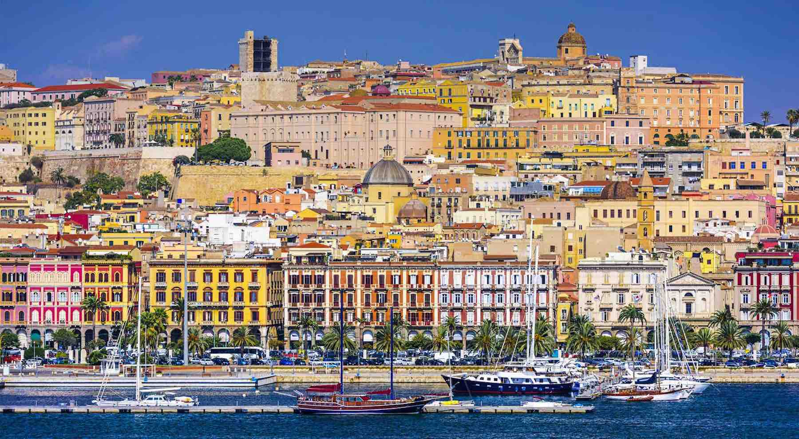
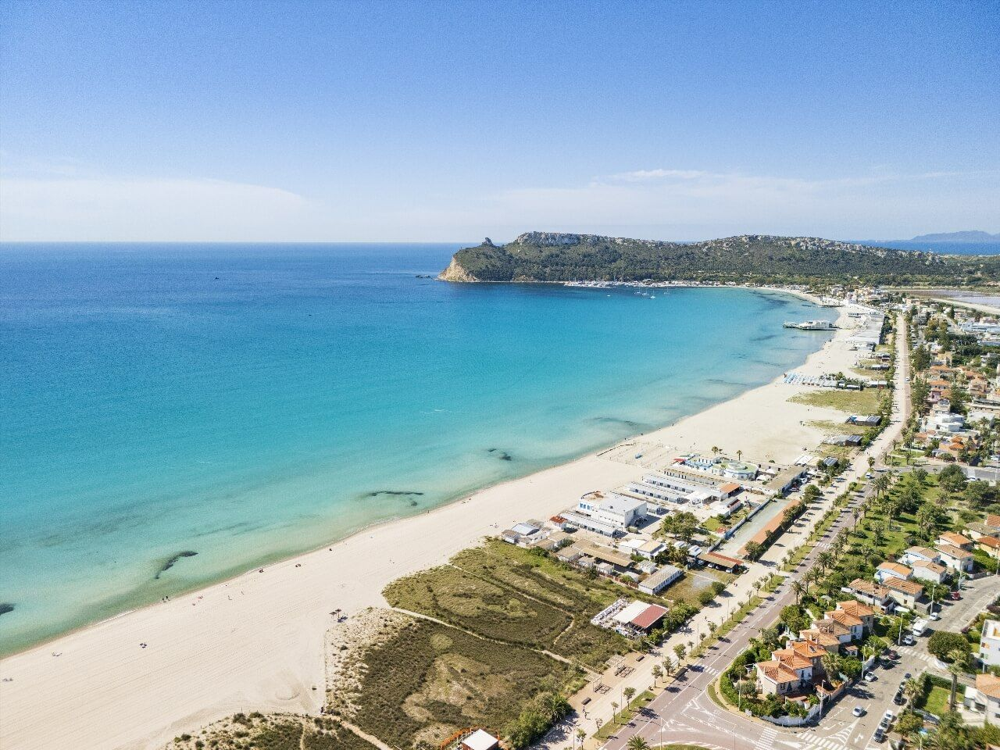
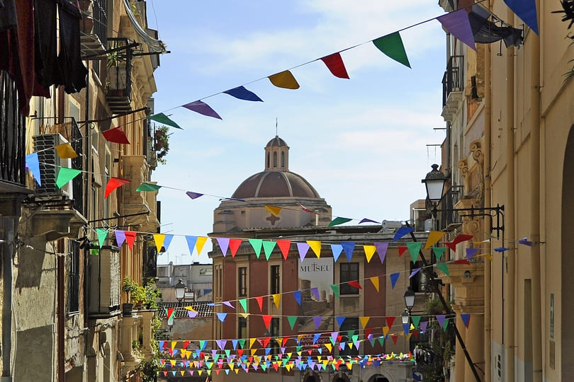
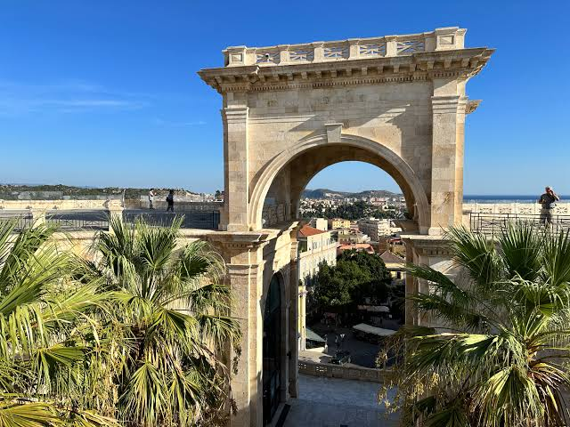
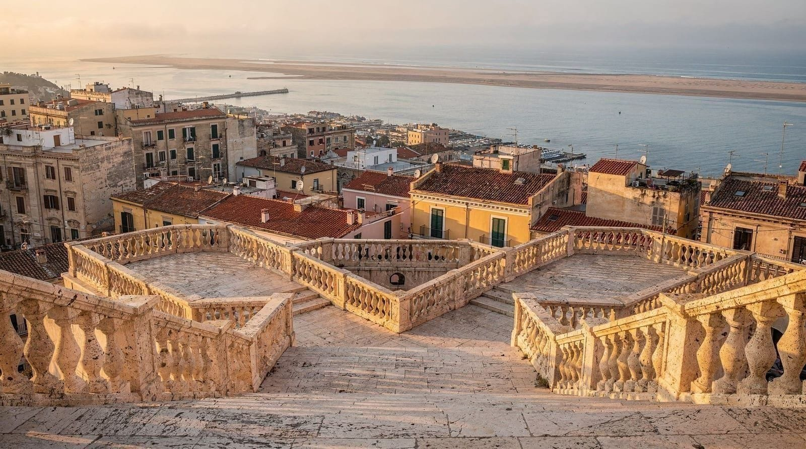
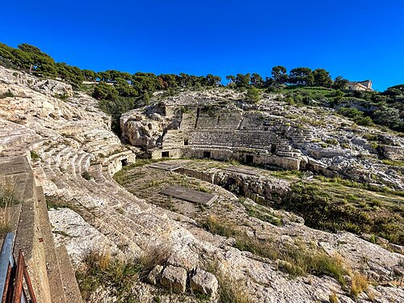
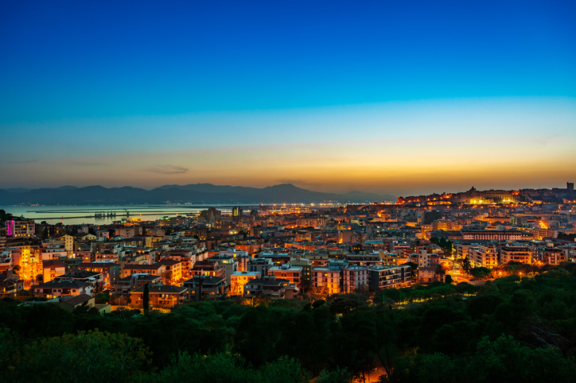
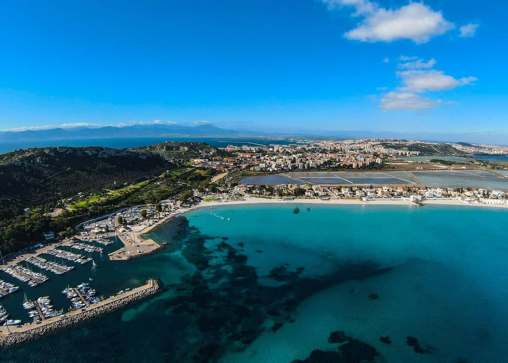
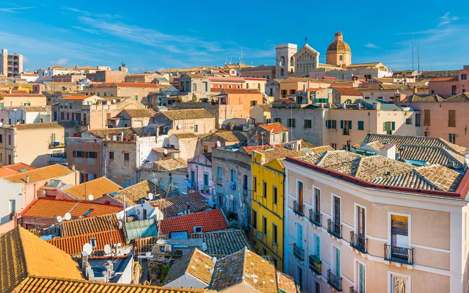
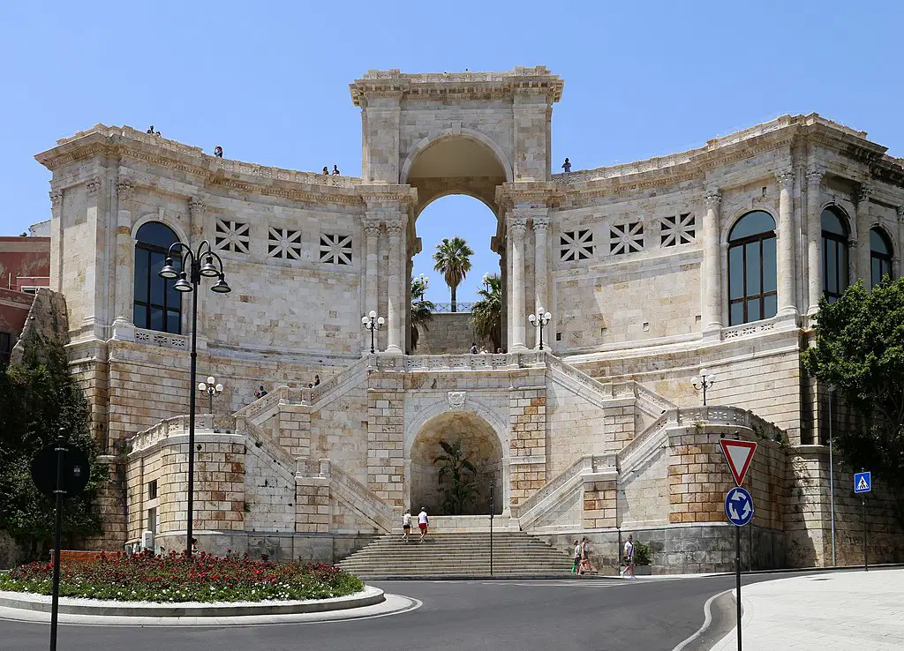

Welcome to Cagliari

Discover a Mediterranean capital where millennial history meets the sweet Italian lifestyle. From the picturesque alleys of the fortified Castello district to the crystal-clear waters of Poetto beach, Cagliari offers a perfect balance of authentic heritage, wild nature, and sun-drenched gastronomy. Let yourself be charmed by this luminous city, the proud guardian of ancient salt lagoons where pink flamingos gracefully roam. Whether you are exploring ancient Roman ruins or simply enjoying a vibrant sunset over the Gulf of Angels, every moment here feels timeless. It is a captivating destination that truly embodies the essence of Sardinia, leaving you with memories that will last a lifetime.
Gallery








